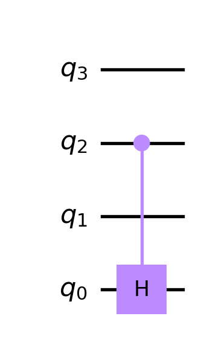
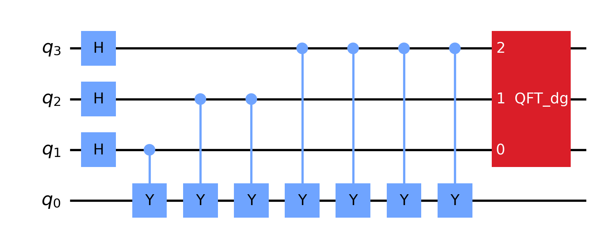
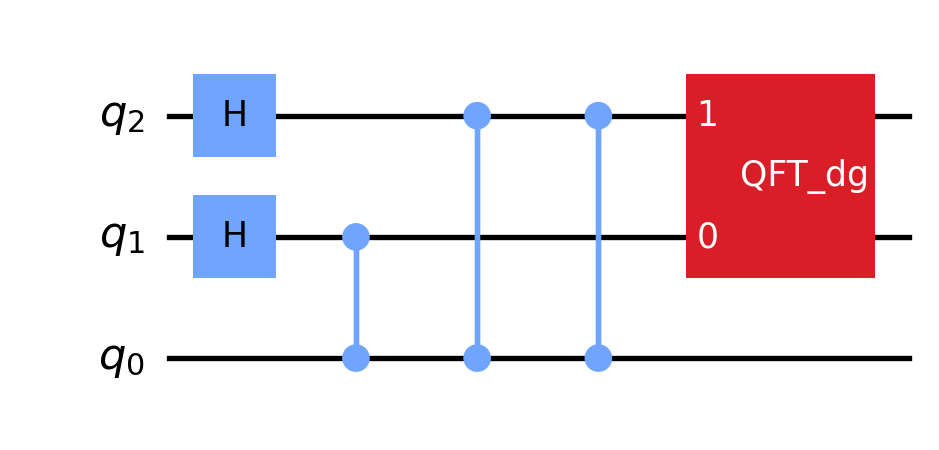
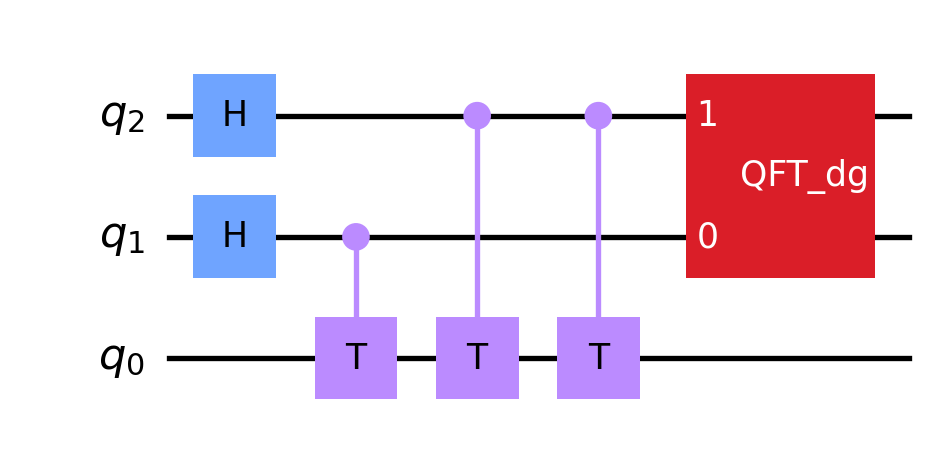
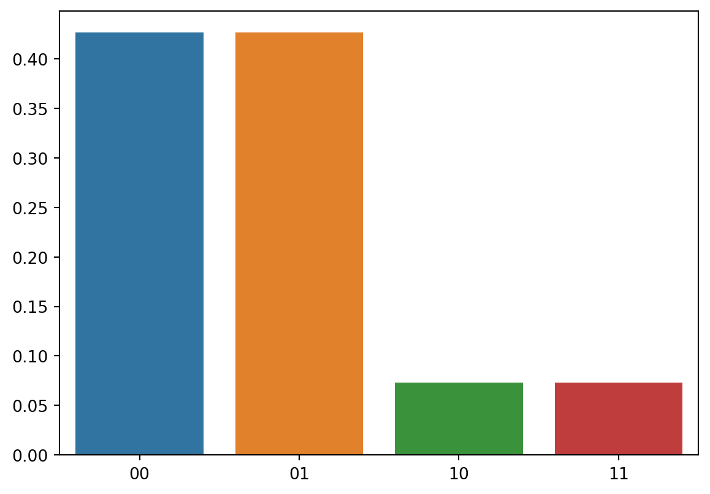
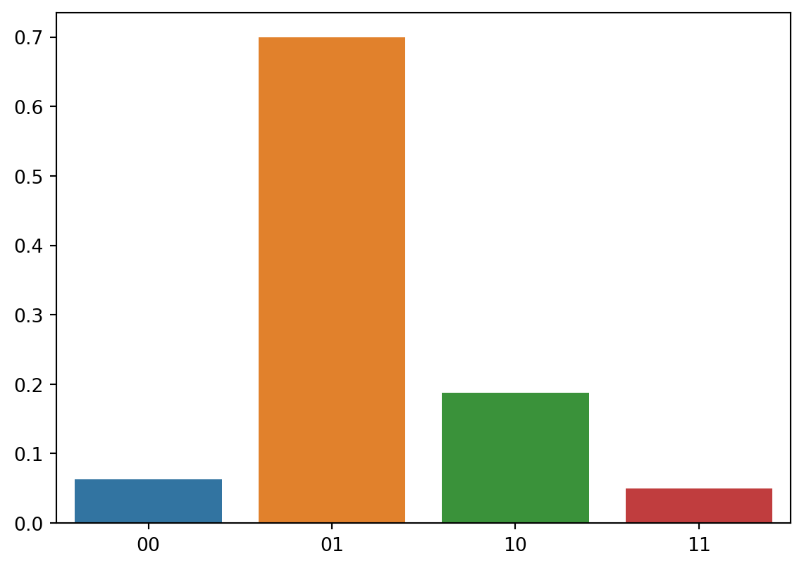
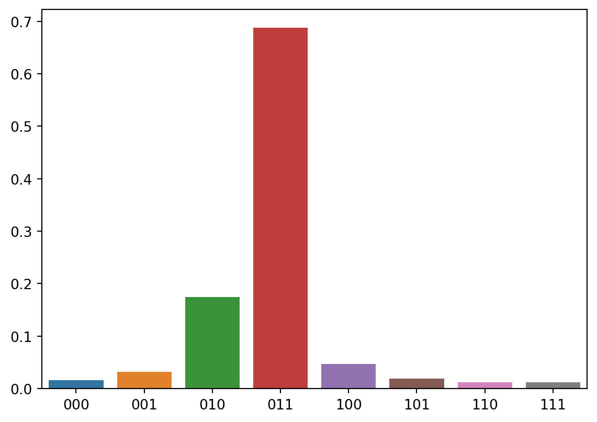
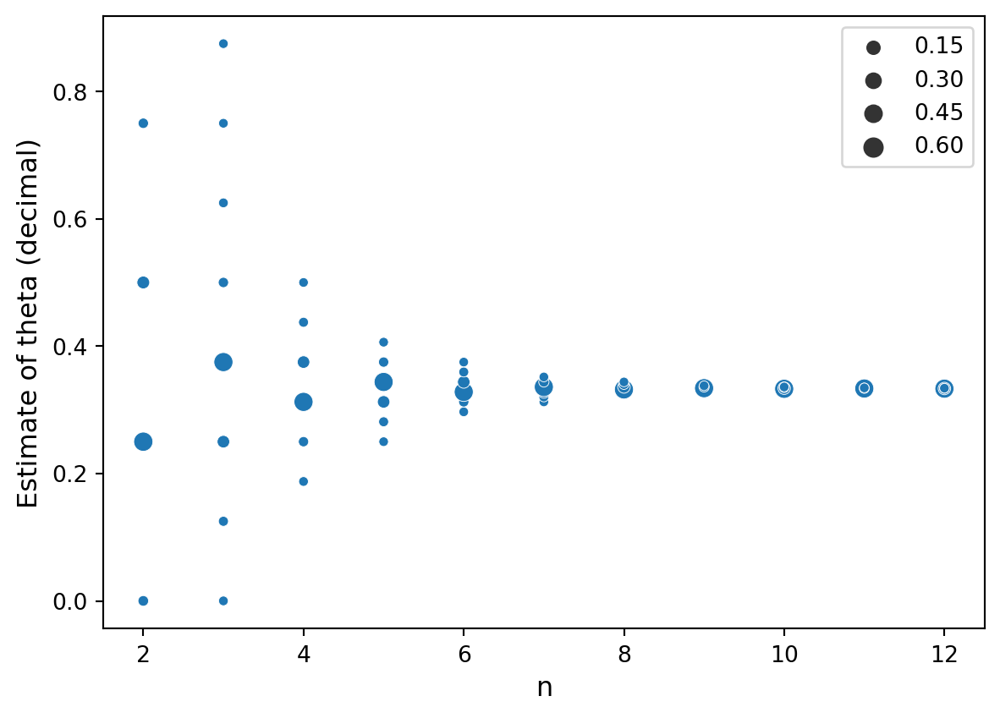
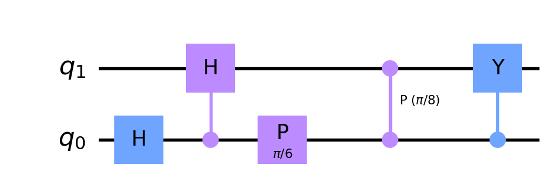
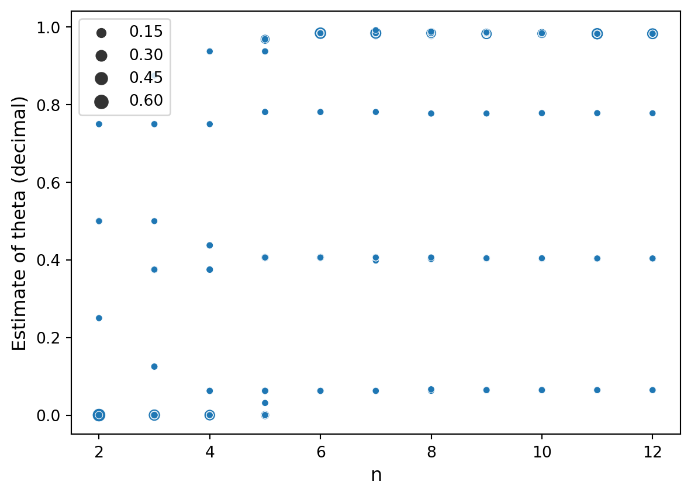

The story of quantum phase estimation starts with a unitary matrix \(U\). Suppose \(|x\rangle\) is an eigenvector of \(U\) so that \(U|x\rangle=\lambda|x\rangle\) for some complex number \(\lambda\). Since \(U\) is unitary, hence distance preserving, we know \(|\lambda|=1\) so that \(\lambda=e^{2\pi i\theta}\) for some \(0\leq\theta<1\). Quantum phase estimation uses a quantum circuit, depending on \(U\), to estimate \(\theta\).
The quantum circuit for quantum phase estimation depends on the quantum Fourier transform (QFT). In a previous post I discussed QFT. In particular, I constructed a quantum circuit for QFT using qiskit. In this post I will reuse that code.
Code
from qiskit import QuantumCircuitfrom qiskit.circuit.library.standard_gates import*from qiskit.quantum_info import Statevectorfrom math import piimport seaborn as snsimport matplotlib.pyplot as pltdef cpc(n):''' Returns an n-qubit quantum circuit consisting of a chain of CP-gates to use in the construction of the QFT circuit. ''' qc = QuantumCircuit(n, name=' CPC')for k inrange(1, n): qc.cp(pi/(2**k), n-1, n-1-k)return qcdef rev(n):''' Returns an n-qubit quantum circuit that reverses the order of the n qubits. ''' qc = QuantumCircuit(n, name=' Rev')for i inrange(n//2): qc.swap(i, n-i-1)return qcdef qft(n):''' Returns the n-qubit QFT circuit. ''' qc = QuantumCircuit(n, name=f' QFT') qc.h(n-1)if n ==1:return qc qc.append(cpc(n), range(n)) qc.append(qft(n-1), range(n-1)) qc.append(rev(n-1), range(n-1)) qc.append(rev(n), range(n))return qc
I first read about quantum phase estimation in qiskit’s book while trying to better understand Shor’s algorithm. Much of what I’ve written below is merely a retelling of qiskit’s treatment. I plan to post about Shor’s algorithm soon.
Controlled \(U\)-gates
Fix a unitary matrix \(U\). The controlled \(U\)-gate is defined by \[
\begin{align*}
CU: & |0\rangle\otimes|v\rangle \mapsto |0\rangle\otimes|v\rangle\\
& |1\rangle\otimes|v\rangle \mapsto |1\rangle\otimes U|v\rangle.
\end{align*}
\] In particular, if \(|x\rangle\) is an eigenvector for \(U\) with eigenvalue \(e^{2\pi i\theta}\) then \[
\begin{align*}
CU: & |0\rangle\otimes|x\rangle \mapsto |0\rangle\otimes|x\rangle\\
& |1\rangle\otimes|x\rangle \mapsto e^{2\pi i\theta}|1\rangle\otimes|x\rangle
\end{align*}
\] or more compactly, for each \(q\in\{0,1\}\)\[
CU:|q\rangle\otimes|x\rangle \mapsto e^{2\pi i\theta q}|q\rangle\otimes|x\rangle.
\]
More generally, we will write \(CU_k\) for the controlled \(U\)-gate mapping \[
CU_k:|q_{n-1}\cdots q_0\rangle\otimes|v\rangle \mapsto
\begin{cases}
|q_{n-1}\cdots q_0\rangle\otimes |v\rangle & \text{if }q_k=0\\
|q_{n-1}\cdots q_0\rangle\otimes U|v\rangle & \text{if }q_k=1
\end{cases}
\] In particular, substituting the eigenvector \(|x\rangle\) we get \[
CU_k:|q_{n-1}\cdots q_0\rangle\otimes|x\rangle \mapsto e^{2\pi i\theta q_k} |q_{n-1}\cdots q_0\rangle\otimes|x\rangle.
\tag{1}\]
CU-gates in qiskit
We can build a controlled \(U\)-gate in qiskit by applying the control() method to a gate object. For example, the following creates a CU-gate when \(U=H\), the Hadamard gate, and places it in a 4-qubit circuit.
u = HGate()cu = u.control()qc = QuantumCircuit(4)qc.append(cu, [2,0])qc.draw(output='mpl', reverse_bits=True)

The quantum phase estimation circuit
The phase estimation circuit is given by the following composition: \[
(QFT^\dagger_n\otimes I)(CU_{n-1}^{2^{n-1}}\cdots CU_2^4CU_1^2CU_0)(H^{\otimes n}\otimes I),
\tag{2}\] where \(QFT^\dagger_n\) is the inverse quantum Fourier transform. Using the qiskit implementation of QFT from this post, we can implement the circuit for quantum phase estimation. For example, here is the phase estimation circuit using the \(Y\)-gate for \(U\), and \(n=3\):
Code
def phase_est(u, n):''' Returns the quantum circuit for phase estimation depending on the gate u, extended with n-qubits. If measure flag is True, will return with first (top) measurement of first (top) n qubits. ''' m = u.num_qubits qc = QuantumCircuit(n+m)for i inrange(n): qc.h(m+i) cu = u.control()for i inrange(n):for _ inrange(2**i): qc.append(cu, [m+i] +list(range(m))) qc.append(qft(n).inverse(), range(m, m+n))return qcphase_est(YGate(), 3).draw(output='mpl', reverse_bits=True, style={"displaycolor": {" QFT_dg": [ # gate name"#da1e28", # box color (red)"#FFFFFF"# box text color (white) ], }})

Inputting an eigenvector to the phase estimation circuit
Recall that the goal of quantum phase estimation is to find \(\theta\) where \(e^{2\pi i\theta}\) is an eigenvalue of \(U\). To see how the circuit 2 can help to accomplish this, we input \(|0\rangle^{\otimes n}\otimes|x\rangle\) where \(|x\rangle\) is an eigenvector of \(U\) with eigenvalue \(e^{2\pi i\theta}\). First we apply the Hadamard \(H\) to the first (top) \(n\) qubits:
\[\begin{align*}
|0\rangle^{\otimes n}\otimes|x\rangle
& \mapsto \left(\frac{1}{\sqrt{2}}(|0\rangle+|1\rangle\right)^{\otimes n}\otimes|x\rangle \\
& = \frac{1}{\sqrt{2^n}}\sum_{0\leq b_0,\ldots,b_{n-1}\leq 1}|b_{n-1}\cdots b_1b_0\rangle \otimes|x\rangle \\
\end{align*} \tag{3}\] Following 2, next we apply \(CU_{n-1}^{2^{n-1}}\cdots CU_2^4CU_1^2CU_0\). Using 1 we see the result of applying \(CU_{n-1}^{2^{n-1}}\cdots CU_2^4CU_1^2CU_0\) to the output of 3 gives \[\begin{align*}
& \frac{1}{\sqrt{2^n}}\sum_{0\leq b_0,\ldots,b_{n-1}\leq 1}\prod_{k=0}^{n-1}e^{2\pi i\theta b_k 2^{k}}|b_{n-1}\cdots b_1b_0\rangle \otimes|x\rangle \\
= & \frac{1}{\sqrt{2^n}}\sum_{0\leq b_0,\ldots,b_{n-1}\leq 1}e^{2\pi i\theta \sum_{k=0}^{n-1}b_k 2^{k}}|b_{n-1}\cdots b_1b_0\rangle \otimes|x\rangle \\
= & \frac{1}{\sqrt{2^n}}\sum_{0\leq b<2^{n}}e^{2\pi i\theta b}|b\rangle \otimes|x\rangle \\
\end{align*} \tag{4}\] Setting \(N=2^{n}\), the left state in the tensor product 4 can be rewritten as \[
\frac{1}{N}\sum_{0\leq b<N}e^{\frac{2\pi i N\theta b}{N}}|b\rangle.
\tag{5}\] Now, since \(0\leq \theta <1\) we have \(0\leq N\theta<N\). If \(N\theta\) happens to be an integer, then the expression 5 is exactly the output \(QFT_n|N\theta\rangle\) (see this post). In this case, when we compete the circuit 2 by applying \((QFT^\dagger_n\otimes I)\) to 4 the result is \(|N\theta\rangle\otimes|x\rangle\). Then we can measure the first (top) \(n\)-qubits to obtain \(N\theta\). Note that since \(N=2^n\), these first \(n\) qubits will give the binary representation of \(\theta\) up to a shift in the radix point. For example, if the first \(n=3\) qubits are in state \(|011\rangle\), then \(\theta\) has binary representation \(0.011\), so \(\theta=3/8\). If \(N\theta\) is not an integer, the result of measuring the first \(n\)-qubits will give an approximation \(\theta_n\) for \(\theta\). The difference \(\theta-\theta_n\) will approach 0 as \(n\to\infty\), so we can improve the approximation \(\theta_n\approx\theta\) by picking a larger \(n\).
Example: \(U=Z\)
In this example we let \(U\) denote the standard \(Z\)-gate so that \(U=|0\rangle\langle0|-|1\rangle\langle1|\). In this case we have an eigenvector \(|x\rangle=|0\rangle\) with eigenvalue \(1\), and thus \(\theta=0\). Let’s use the phase estimation circuit with \(n=2\):
Code
n =2pe = phase_est(ZGate(), n)pe.draw(output='mpl', reverse_bits=True, style={"displaycolor": {" QFT_dg": [ # gate name"#da1e28", # box color (red)"#FFFFFF"# box text color (white) ], }})

We use the default input state \(|00\rangle\otimes|x\rangle=|000\rangle\), which we can implement in qiskit as follows:
The first \(n=2\) qubits give \(|00\rangle=|N\theta\rangle\). Thus we see \(\theta = 0\), as expected.
On the other hand, \(U=Z\) also has an eigenvector \(|x\rangle=|1\rangle\) with eigenvalue \(-1\) (so \(\theta=1/2\)). The following code will run the state \(|00\rangle\otimes|x\rangle=|001\rangle\) through the phase estimation circuit:
This time the first \(n=2\) qubits gives \(|10\rangle=|N\theta\rangle\), which means the binary representation of \(\theta\) is \(0.10\), so \(\theta=1/2\), as expected.
Example: \(U=T\)
In this example we let \(U\) denote the standard \(T\)-gate so that \(U=|0\rangle\langle0|+e^{\pi i/4}|1\rangle\langle1|\). Let us look at the eigenvector \(|x\rangle=|1\rangle\) which has eigenvalue \(e^{\pi i/4}\), (so \(\theta=1/8\)). Let’s start by using the phase estimation circuit with \(n=2\):
Code
n =2pe = phase_est(TGate(), n)pe.draw(output='mpl', reverse_bits=True, style={"displaycolor": {" QFT_dg": [ # gate name"#da1e28", # box color (red)"#FFFFFF"# box text color (white) ], }})

If we input the state \(|00\rangle\otimes|x\rangle=|001\rangle\), we get the following unpleasant looking output:
If we to measure the first \(n=2\) qubits of that output, we see four states with the following probabilities:
Code
prob_dict = out_state.probabilities_dict()states =list(prob_dict.keys())first_states = [s[:-1] for s in states]probs = [prob_dict[s] for s in states]sns.barplot(x=first_states, y=probs)
<AxesSubplot:>

The reason that we are seeing a somewhat complicated output (which you may not expect since \(\theta=1/8\) is so uncomplicated) is that we have chosen \(n=2\), so that \(N=2^n=4\), which gives the non-integer \(N\theta=1/2\). On the other hand, if we use a circuit with \(n=3\) we get something much nicer. Here’s the circuit:
Code
n =3pe = phase_est(TGate(), n)pe.draw(output='mpl', reverse_bits=True, style={"displaycolor": {" QFT_dg": [ # gate name"#da1e28", # box color (red)"#FFFFFF"# box text color (white) ], }})
In this case, the first 3 qubits of the output are \(|001\rangle\), so \(0.001\) is the binary representation of \(\theta\), which gives \(\theta=1/8\), as expected.
Example: \(U=P_{2\pi/3}\)
If the \(\theta\) we’re searching for does not have a terminating binary representation, then the phase estimation circuit has no chance of outputting the exact value of \(\theta\). For example, let \(U=P_{2\pi/3}\) denote the phase gate given by \(U=|0\rangle\langle0|+e^{2\pi i/3}|1\rangle\langle1|\). Let’s look at the eigenvector \(|x\rangle=|1\rangle\) with eigenvalue \(e^{2\pi i/3}\), so that \(\theta = 1/3\). In this case, \(N\theta=N/3\) will not be an integer for any \(N=2^n\), so the phase estimation circuit will only give us an approximation for \(\theta\), and we should see that approximation improving as \(n\) increases. For example, if we take \(n=2\), the phase estimation circuit will send \(|00\rangle\otimes|x\rangle=|001\rangle\) to the following superposition:
Measure the first \(n=2\) qubits of that output, we see all four states with the following probabilities:
Code
prob_dict = out_state.probabilities_dict()states =list(prob_dict.keys())first_states = [s[:-1] for s in states]probs = [prob_dict[s] for s in states]sns.barplot(x=first_states, y=probs)
<AxesSubplot:>

The state with the highest probability, \(|01\rangle\), leads to the best of the four approximations, namely the one with binary representation \(0.01\), i.e. \(\theta\approx 1/4\). To get a better approximation, we take \(n=3\) which leads to the following probabilities:
Code
n =3pe = phase_est(u, n)in_state = Statevector.from_int(1, 2**(n+1)) out_state = in_state.evolve(pe)prob_dict = out_state.probabilities_dict()states =list(prob_dict.keys())first_states = [s[:-1] for s in states]probs = [prob_dict[s] for s in states]sns.barplot(x=first_states, y=probs)
<AxesSubplot:>

The highest probability leads us to the binary representation \(0.011\), which gives the approximation \(\theta\approx 3/8\).
The following plot shows the (decimal) approximations that the phase estimation circuit produces for \(2\leq n\leq 12\). Each point corresponds to a possible state obtained by measuring the first \(n\) qubits in the output of the phase estimation circuit. The size of each point corresponds to the state’s probability, and only those states with probability greater than one percent are shown. We can see that the estimates obtained are indeed approaching the true value \(\theta=1/3\).
Code
def scatter_phase_estimates(u, input_int=0, qubit_size=12, rare=0.01): ''' Produces a scatter plot of the phases estimates. ''' u_size = u.num_qubits num_qbits = [] probs = [] thetas = []for n inrange(2, qubit_size +1): pe = phase_est(u, n) in_state = Statevector.from_int(input_int, 2**(n+u_size)) out_state = in_state.evolve(pe) out_state.draw('latex') prob_dict = out_state.probabilities_dict() states =list(prob_dict.keys()) num_qbits += [n for s in states if prob_dict[s] > rare] probs += [prob_dict[s] for s in states if prob_dict[s] > rare] thetas += [int(f'{s[:-u_size]}', base=2)/2**n for s in states if prob_dict[s] > rare] graph = sns.scatterplot(x=num_qbits, y=thetas, size=probs) graph.set_xlabel( "n" , size =12 ) graph.set_ylabel( "Estimate of theta (decimal)" , size =12 ) plt.show()scatter_phase_estimates(PhaseGate(2*pi/3), input_int=1)

Honest phase estimation: when we don’t already know the eigenvalue
So far we have looked at what the phase estimation circuit does to an input of the form \(|0\rangle^{\otimes n}\otimes|x\rangle\) where \(|x\rangle\) is an eigenvector of \(U\). But hang on, if we know an eigenvector \(|x\rangle\) for \(U\), we can just compute \(U|x\rangle\) to determine the corresponding \(\theta\). Phase estimation is only useful if it can determine (an estimate) for the phase without already knowing eigenvectors. Luckily, since \(U\) is unitary it is diagonalizable (by a Spectral Theorem). In other words, \(U\) admits a basis of eigenvectors. In particular, for any vector \(|x\rangle\) we can write \[
|x\rangle = \alpha_1|x_1\rangle+\alpha_2|x_2\rangle+\cdots+\alpha_m|x_m\rangle
\tag{6}\] where \(|x_1\rangle,\ldots,|x_m\rangle\) are all eigenvectors of \(U\). Thus, if we run \(|x\rangle\) through the phase estimation circuit will have the effect of running all the eigenvectors that appear in 6, weighted depending on the \(\alpha_i\)’s. For example, let \(U\) denote the gate corresponding to the following (essentially randomly chosen) circuit:
Code
u = QuantumCircuit(2)u.h(0)u.ch(0,1)u.p(pi/6, 0)u.cp(pi/8, 1, 0)u.cy(0,1)u.draw(output='mpl', reverse_bits=True)

Since \(U\) corresponds to a \(4\times 4\) matrix, we know \(U\) has at most 4 distinct eigenvalues. Let \(|x\rangle=|00\rangle\) (which is not an eigenvector of \(U\)). The following shows the phase estimates obtained from the phase estimate circuit by inputting \(|0\rangle^{\otimes n}\otimes|x\rangle=|0\cdots0\rangle\) for various values of \(n\)
Code
u = u.to_gate()scatter_phase_estimates(u)

Note that after some initial noise, the phase estimates stabilize at 4 different values. These are the four values of \(\theta\) corresponding to the 4 distinct eigenvalues of \(U\). As this example illustrates, the process of quantum phase estimation really can be used to discover eigenvalues of a unitary matrix.